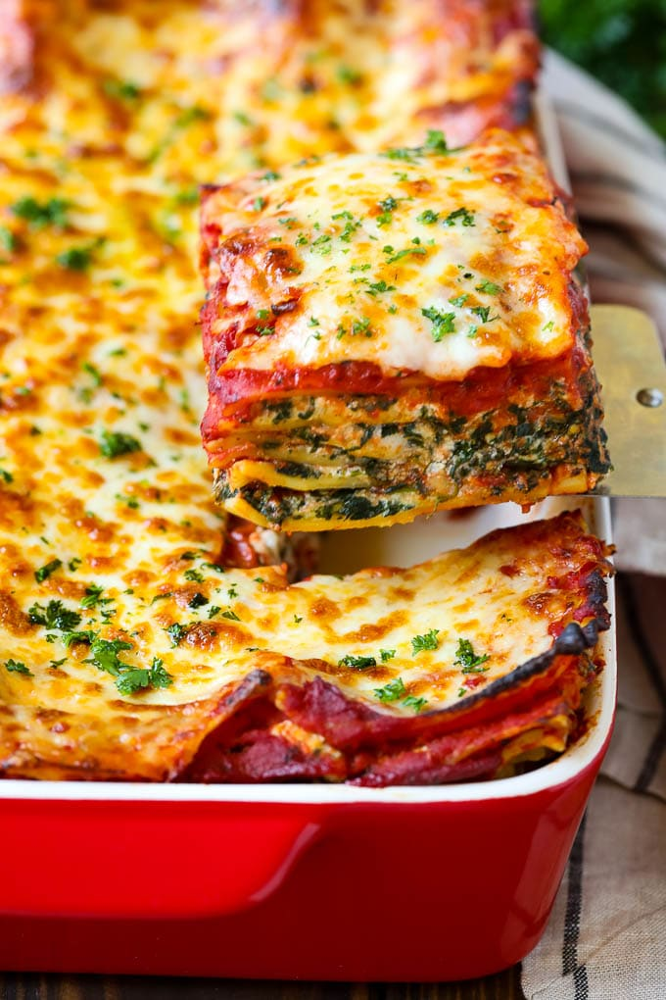

Spinach Lasagna

An easy, delicious spinach lasagna recipe that anyone can make! Perfect for feeding the family in a weekday night!
Ingredients
- 2 (10 ounce) packages frozen chopped spinach, thawed and squeezed dry
- ½ medium onion, chopped
- 2 cloves garlic, crushed
- 12 uncooked lasagna noodles
- Your choice of sauce in a jar
Steps
- Preheat the oven to 350 degrees F (175 degrees C).
- Heat oil in a large pot over medium heat. Add spinach, onion, garlic, oregano, and basil; sauté until onion has softened, 3 to 5 minutes. Pour in spaghetti sauce and water; simmer for 20 minutes.
- Meanwhile, mix cottage cheese, mozzarella, parsley, Parmesan, egg, salt, and pepper together in a bowl until well combined.
- Remove sauce from the heat; spoon a small amount into the bottom of a 9x13-inch baking pan. Place four uncooked noodles on top of sauce, then top with 1/3 of the remaining sauce. Layer with four more noodles, 1/2 of the remaining sauce, and 1/2 of the cheese mixture. Repeat layers once more with remaining noodles, sauce, and cheese mixture. Cover with foil.
- Bake in the preheated oven for 55 minutes. Remove the foil and bake for 15 more minutes. Let sit for 10 minutes before serving.